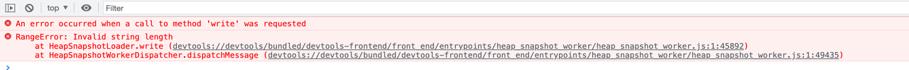
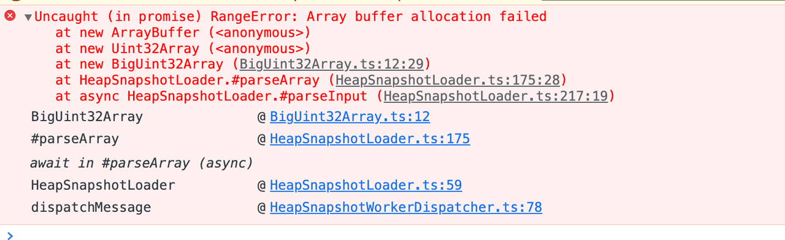

在一次项目中，遇到了内存泄漏问题，需要对内存进行分析。
所开发的程序是VSCode插件，所以是一个Electron程序。Electron似乎是做了什么骚操作，使得llnode并不能解析，用v8 findjsobjects指令并不能看到任何对象。所以使用了heapdump。
在插件中引入heapdump。要注意，heapdump使用的v8 addon来dump内存的，而v8 addon的编译版本取决于开发环境的node版本，而electron自带了node运行环境，所以需要根据electron版本来编译heapdump。electron提供了rebuild工具供使用。另外，webpack打包的时候也需要把addon单独放在输出目录，通过node-loader 完成。
由于不能稳定重现，外加重现容易死机，导致最后能拿到手的只有一个4G的文件，悲催的是，这个文件放到devtools中解析报错。接下来就是强行啃这个工具（有折返尝试过llnode，但llnode自己实现了一套解析方法，和heapdump不同，所以就不记录了）。
首先是第一个错误：
相关源码 ：
write(chunk: string): void {
this.#buffer += chunk;
if (!this.#dataCallback) {
return;
}
this.#dataCallback(this.#buffer);
this.#dataCallback = null;
this.#buffer = '';
}
这里的write方法作用：在解析内存文件时，分段将内存文件的内容写入到变量内。报错的原因：这里内存文件的内容超出了string的长度限制，这个长度是v8限制的。
相关源码：
static constexpr int kMaxLength = internal::kApiSystemPointerSize == 4 ? (1 << 28) - 16 : (1 << 29) - 24;
可以看到，长度限制为229-24。chromium社区关于这个限制的讨论有很多，但目前还是没有放开。
能否尝试修改v8来突破这个限制呢？一番尝试以后，遇到以下问题
还是把视线拉回到devtools，发现devtools是可以单独开发的， 相关文档 并不需要编译整个chromium，那么能否通过修改devtools来绕过这个限制呢？尝试自己实现一个string。另外，除了string的长度超过限制，devtools中还有一个Uint32Array也超过了限制。
经过梳理变量引用，发现之需要实现以下方法与属性即可
String
方法
属性
Uint32Array
属性
实现思路为：内部维护一个string数组或者Uint32Array数组，也就是二维数组，以达到扩容又不触及v8限制的目的。
其中的String.toJson方法可以借助json-bigint稍作修改来实现。
将新的String与Uint32Array应用到devtools。开始尝试解析，遇到了新的问题，这回是内存分配失败：
观察进程管理器，发现内存到1.4G左右就失败，所以是v8的限制。chromium有提供参数js-flag来将参数转发给v8，而v8提高内存限制的参数为max_old_space_size。所以执行命令：
./Chromium --custom-devtools-front-end=file:////path/to/devtools-frontend --js-flags="--max_old_space_size=16192"
这样就将内存限制改为16GB了。再次运行内存分析，再次失败，错误仍旧是内存分配。
既然v8的内存限制已经解除了，这次可能是触及到了chromium的限制了，经过搜索发现一篇edge开发者的文章，linux和windows有内存限制，但是mac没有，这不符合预期。幸运的是，在这名开发者的内存测试工具中，又找到了一个chromium的限制：单次分配内存不超过2G（node没这个限制，所以在自定义String和Uint32Array中没有发现，另外，后来了解到ArrayBuffer的内存并不算是v8的） 之前给单个Uint32Array元素的长度限制为232-1，也就是接近4G，单个Uint32是4字节，所以最高尝试了一次分配4G*4B=16GB的内存，超过了2G的限制。尝试修改单个Uint32Array元素的长度为228-1。
再次运行解析，又遇到了类似的错误：Map maximum size exceeded。
这次是Map类型的长度超限制了，有了之前的经验，这个问题也很快通过二维Map解决了。
再次解析，经过漫长的等待后，终于解析成功~！
最后，附上自定义的String、Uint32Array、Map代码仓库链接
2022.4.22